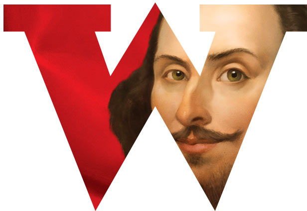
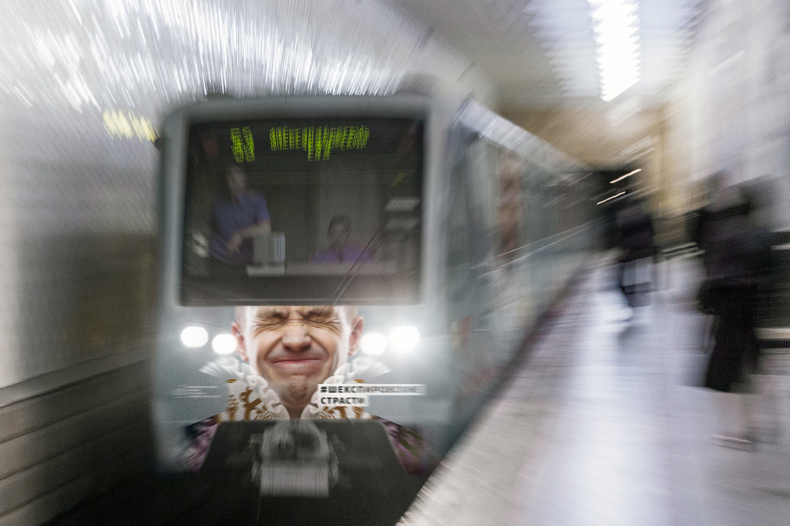

<!DOCTYPE html>
<!--[if lt IE 7]><html lang="ru" class="lt-ie9 lt-ie8 lt-ie7"><![endif]-->
<!--[if IE 7]><html lang="ru" class="lt-ie9 lt-ie8"><![endif]-->
<!--[if IE 8]><html lang="ru" class="lt-ie9"><![endif]-->
<!--[if gt IE 8]><!-->
<html lang="ru">
<!--<![endif]-->
<head>
  <meta charset="utf-8" />
  <title>Train metro</title>
  <meta name="description" content="Создание адаптивного сайта" />
  <meta http-equiv="X-UA-Compatible" content="IE=edge" />
  <meta name="viewport" content="width=device-width, initial-scale=1.0" />

  <link rel="shortcut icon" href="../../_common/images/favicon.png" />

  <link rel="stylesheet" href="../../_common/css/reset.css" />
  <link rel="stylesheet" href="css/style.css" />
</head>

<body>

<div class="portfolio_screenshot portfolio_slider_0">
  <div style="max-width: 100%; margin-top: 986px; height: 10625px; margin-bottom: 0;" class="slide_elem slide_elem_wide">
    <div id="slider-0" class="portfolio_slider__wrapper">
      <div class="portfolio_slider__inner">
        <!--<div style="position: absolute; top: -986px; width: 100%;" class="outter1">
          <div class="announce__text"><p>
            В&nbsp;московском метро курсируют четырнадцать именных поездов, которые приятно и&nbsp;с&nbsp;пользой
            разнообразят повседневные подземные поездки пассажиров. Проект «Поэзия в&nbsp;метро» призван рассказать
            людям о&nbsp;жизни и&nbsp;творчестве выдающихся поэтов разных стран и&nbsp;эпох. В&nbsp;студии придумано
            оформление экспозиции, которая посвящена памяти великого английского драматурга Уильяма Шекспира. </p>
          </div>
          <div class="announce__picture">
            
          </div>
          <div class="announce__picture-note">Шекспировское метро</div>
          <div class="announce__text">
            <p>
              Тематический поезд называется «Шекспировские страсти», и&nbsp;в&nbsp;нем разыгрывается диалог эпох. Во&nbsp;все
              времена люди испытывают одни и&nbsp;те&nbsp;же чувства, но&nbsp;способы и&nbsp;средства для их&nbsp;выражения
              неизбежно меняются. Бурные переживания прошлого, представленные в&nbsp;современных декорациях,
              становятся
              ближе и&nbsp;понятнее при помощи эмодзи&nbsp;&mdash; пиктографического языка наших дней.
            </p>
          </div>
        </div>-->
        <div class="slider-img" style="margin-left: 1920px; left: -1189.67px;">
          
        </div>
        <div class="platform"></div>
        <!--<div style="position: absolute; top: 100%; width: 100%;" class="outter2">
          <div class="announce__picture-note">
            Снаружи поезд украшают выразительные портреты современных молодых людей в&nbsp;образах
            шекспировских героев
          </div>
          <br>

          <div class="announce__picture w1200">
            
          </div>
          <div class="announce__picture-note">Головной вагон</div>
        </div>-->
      </div>
    </div>
  </div>
</div>

<!--[if lt IE 9]>
<script src="libs/IE/html5shiv/es5-shim.min.js"></script>
<script src="libs/IE/html5shiv/html5shiv.min.js"></script>
<script src="libs/IE/html5shiv/html5shiv-printshiv.min.js"></script>
<script src="libs/IE/respond/respond.min.js"></script>
<![endif]-->
<script src="libs/jquery/jquery-1.11.1.min.js"></script>

<script src="js/main.js"></script>
</body>
</html>